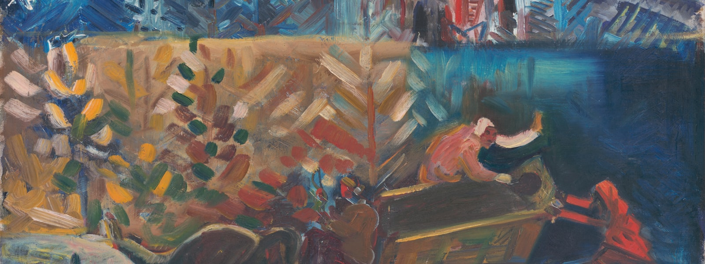

Kushagra "Kush" Tiwary
Office: 32-G482 & E14-374H
ktiwary [at] mit [dot] edu |
LinkedIn |
GitHub |
X |
Google Scholar |
CV |
Photo
I'm a 3rd year PhD Student at MIT co-advised by Boris Katz, Ramesh Raskar, and Tomaso Poggio.
I also work closely with Brian Cheung at UCSF and at the Frontier Intelligence Group at Sakana.ai where
I was a research scientist intern working with Sebastian Risi. I was also a Teaching Assistant at Brains, Minds, and Machines summer course at the Marine Biological Laboratory in Woods Hole, MA.
The overarching research interest is to understand the computational principles that enable intelligence to create new forms of intelligence, uncover scientific principles, and invent new technologies.
I use simulations to study how intelligence (LLMs, embodied agents, etc.) can discover new things (scientific principles, inventions, etc.) through evolution, sensorimotor learning, and open-ended processes.
I received my S.M. in 2023 from MIT, where I worked on 3D vision and imaging, specifically on incorporating realistic physics of light propagation to improve neural rendering.
I received my B.S.'19 in ECE from the University of Illinois at Urbana-Champaign where I worked on computer vision and robotics.
Before MIT, I worked on vision and robotics at Optimus Ride, a self-driving startup, where I built the Software 2.0 stack.
I've exhibited work at the MIT Museum and the Museum of Science, and I'm grateful to be the first in my extended family to be in a PhD program. Reach out to chat or collaborate.
Writings:
- What Project Hail Mary Teaches Us About Intelligence [link]
- Can we computationally recreate vision evolution? [link]
- Designing Visual Intelligence for Science and Engineering [link]
- Computer Vision 2.0: Light as the First-Class Citizen [link]
- Ingredients of Modern Perception [link]
- Generators vs. Verifiers for Scientific Discovery (thread on X) [link]
-
Embodied Eyes For Scientific Discovery — Redwood Center, UC Berkeley [Seminar Page]
-
What-If Machines for Vision — MIT Imagination in Action [Youtube]
-
TEDx Boston — Can AI Recreate 500 Million Years of Vision Evolution? [Youtube]